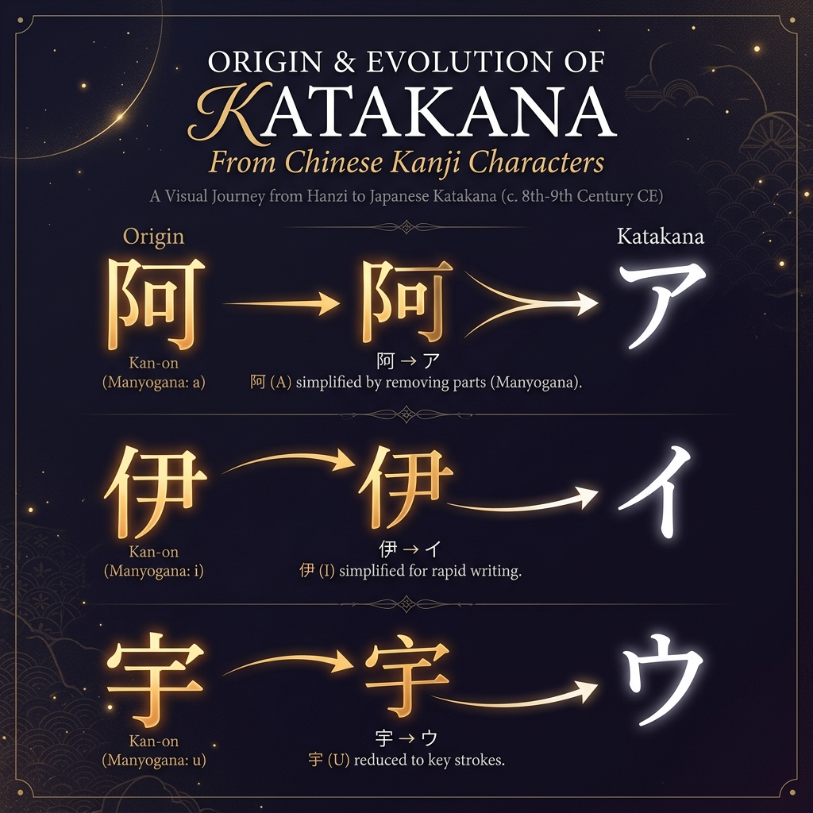

What Is Katakana?
Katakana (カタカナ / 片仮名) is one of three Japanese writing systems, alongside Hiragana and Kanji. Developed during the 9th century from parts of Chinese characters (man'yōgana), Katakana was originally used by Buddhist monks for annotations in Chinese texts.
Today, Katakana is primarily used for:
- Foreign loanwords — e.g., コンピューター (konpyūtā, "computer")
- Foreign names — e.g., マイケル (maikeru, "Michael")
- Scientific and technical terms — animal and plant names in formal contexts
- Onomatopoeia — sound effects in manga and literature
- Emphasis — similar to italics in English writing
- Company names and brand logos
Unlike Hiragana's rounded, flowing strokes, Katakana characters are defined by sharp, angular lines. This visual distinction makes it easier to spot Katakana in mixed Japanese text once you become familiar with both systems.
The 46 Basic Katakana Characters
The modern Katakana system consists of 46 basic characters. Each character represents a single syllable (called a mora) and has an exact Hiragana equivalent with identical pronunciation. The characters are organized into rows based on their consonant sounds.
The 46 characters are organized into the following consonant groups, known as the gojūon (五十音, literally "fifty sounds") ordering system:
| Row | A | I | U | E | O |
|---|---|---|---|---|---|
| Vowels | ア (a) | イ (i) | ウ (u) | エ (e) | オ (o) |
| K-row | カ (ka) | キ (ki) | ク (ku) | ケ (ke) | コ (ko) |
| S-row | サ (sa) | シ (shi) | ス (su) | セ (se) | ソ (so) |
| T-row | タ (ta) | チ (chi) | ツ (tsu) | テ (te) | ト (to) |
| N-row | ナ (na) | ニ (ni) | ヌ (nu) | ネ (ne) | ノ (no) |
| H-row | ハ (ha) | ヒ (hi) | フ (fu) | ヘ (he) | ホ (ho) |
| M-row | マ (ma) | ミ (mi) | ム (mu) | メ (me) | モ (mo) |
| Y-row | ヤ (ya) | — | ユ (yu) | — | ヨ (yo) |
| R-row | ラ (ra) | リ (ri) | ル (ru) | レ (re) | ロ (ro) |
| W-row | ワ (wa) | — | — | — | ヲ (wo) |
| N | ン (n) | — | — | — | — |
Interactive Katakana Chart
Click on any character below to see its pronunciation details. Use the filter buttons to switch between different character sets.
Dakuon (濁音) and Handakuon (半濁音)
Dakuon (voiced sounds) are created by adding two small diagonal strokes — called dakuten (゛) or informally tenten — to certain basic Katakana characters. This changes the consonant sound from voiceless to voiced.
| Base | Dakuon | Sound Change | Example Word |
|---|---|---|---|
| カ (ka) | ガ (ga) | K → G | ガラス (garasu) — Glass |
| サ (sa) | ザ (za) | S → Z | デザイン (dezain) — Design |
| タ (ta) | ダ (da) | T → D | ダンス (dansu) — Dance |
| ハ (ha) | バ (ba) | H → B | バス (basu) — Bus |
Handakuon (half-voiced sounds) use a small circle — called handakuten (゜) or maru — exclusively on the H-row characters, converting them to P-sounds.
| Base | Handakuon | Sound Change | Example Word |
|---|---|---|---|
| ハ (ha) | パ (pa) | H → P | パン (pan) — Bread |
| ヒ (hi) | ピ (pi) | H → P | ピアノ (piano) — Piano |
| フ (fu) | プ (pu) | F/H → P | プール (pūru) — Pool |
| ヘ (he) | ペ (pe) | H → P | ペン (pen) — Pen |
| ホ (ho) | ポ (po) | H → P | ポスト (posuto) — Post |
Think of Dakuten (゛) as "two drops of voice" added to make sounds voiced. The Handakuten (゜) circle is unique to the H-row — it turns H-sounds into P-sounds only.
Youon (拗音) — Combination Characters
Youon are formed by attaching a smaller version of ヤ (ya), ユ (yu), or ヨ (yo) to Katakana characters ending in the "i" vowel. These create contracted syllables that combine two sounds into one mora.
| Base + Ya | Base + Yu | Base + Yo |
|---|---|---|
| キャ (kya) | キュ (kyu) | キョ (kyo) |
| シャ (sha) | シュ (shu) | ショ (sho) |
| チャ (cha) | チュ (chu) | チョ (cho) |
| ニャ (nya) | ニュ (nyu) | ニョ (nyo) |
| ヒャ (hya) | ヒュ (hyu) | ヒョ (hyo) |
| ミャ (mya) | ミュ (myu) | ミョ (myo) |
| リャ (rya) | リュ (ryu) | リョ (ryo) |
Additionally, Youon can combine with Dakuon characters:
| Base + Ya | Base + Yu | Base + Yo |
|---|---|---|
| ギャ (gya) | ギュ (gyu) | ギョ (gyo) |
| ジャ (ja) | ジュ (ju) | ジョ (jo) |
| ビャ (bya) | ビュ (byu) | ビョ (byo) |
| ピャ (pya) | ピュ (pyu) | ピョ (pyo) |
Sokuon (促音) — Double Consonants
The Sokuon is a small "tsu" character ッ that indicates a geminated (doubled) consonant. In speech, it creates a brief pause before the next consonant — like a tiny catch in your breath.
| Katakana | Romaji | English | Pronunciation Note |
|---|---|---|---|
| ベッド | beddo | Bed | Pause before "d" |
| カップ | kappu | Cup | Pause before "p" |
| サッカー | sakkā | Soccer | Pause before "k" |
| ペット | petto | Pet | Pause before "t" |
| ロック | rokku | Rock | Pause before "k" |
Don't confuse the full-size ツ (tsu) with the small ッ (sokuon). The small version does not produce a "tsu" sound — it only doubles the consonant that follows it. Size matters in Japanese!
Long Vowels — Chōon (長音)
In Katakana, long vowels are indicated by a horizontal dash called chōonpu (ー). This is simpler than Hiragana, which adds a second vowel character. The dash extends the preceding vowel by one mora.
| Katakana | Romaji | English | Long Vowel |
|---|---|---|---|
| コーヒー | kōhī | Coffee | ō, ī |
| ケーキ | kēki | Cake | ē |
| スーパー | sūpā | Supermarket | ū, ā |
| ノート | nōto | Notebook | ō |
| ビール | bīru | Beer | ī |

Practice Quiz — Test Your Katakana Knowledge
Put your learning to the test with this interactive quiz. Match each Katakana character to its correct romaji pronunciation.
🎯 Katakana Reading Quiz
Click the correct romaji for each character shown.
What is the romaji for this character?
Your Learning Progress
Track how much of the Katakana system you've covered in this guide:
Frequently Asked Questions
How many basic Katakana characters are there?
There are 46 basic Katakana characters in the Japanese writing system. Each represents a specific syllable (mora) and maps exactly to its Hiragana counterpart. When you include Dakuon (25), Handakuon (5), and Youon combinations (33+), the total exceeds 104 characters.
What is the difference between Dakuon and Handakuon?
Dakuon uses two small diagonal strokes (゛) called dakuten to voice consonants (e.g., カ ka → ガ ga). Handakuon uses a small circle (゜) called handakuten, exclusively on the H-row characters, to create P-sounds (e.g., ハ ha → パ pa).
What are Youon in Katakana?
Youon (拗音) are combination characters formed by adding a smaller ャ (ya), ュ (yu), or ョ (yo) to consonants ending in the "i" vowel. For example, キ (ki) + ャ (ya) = キャ (kya). They represent contracted sounds and count as a single mora.
How long does it take to learn all Katakana characters?
Most learners can master the 46 basic Katakana characters within 1-2 weeks of consistent practice. Learning the extended characters (Dakuon, Handakuon, Youon) typically takes another week. Daily writing practice and flashcard review accelerate the process significantly.
Ready to Use Your Katakana Knowledge?
Try our free Katakana converter to see how English words and names look in the Katakana characters you just learned.
Convert to Katakana →